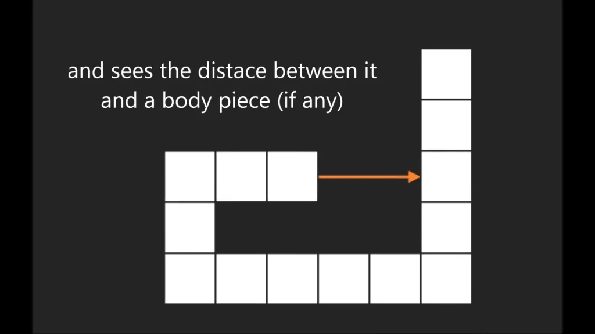

Машинное обучение: как оно работает и где применяется?
До недавних пор программистам приходилось писать сложные и очень точные инструкции даже для того, чтобы компьютеры могли выполнять самые простые задачи.
Языки программирования всегда развивались, но самым значительным достижением в этой области стало упрощение работы с кодом. Теперь компьютеры можно не программировать как раньше, а настраивать таким образом, чтобы они обучались сами. Этот процесс, названный машинным обучением, обещает стать настоящим технологическим прорывом и может повлиять на любого человека, независимо от сферы его деятельности.
Что такое машинное обучение?
Machine Learning (ML, с английского – машинное обучение) — это методики анализа данных, которые позволяют аналитической системе обучаться в ходе решения множества сходных задач. Машинное обучение базируется на идее о том, что аналитические системы могут учиться выявлять закономерности и принимать решения с минимальным участием человека.
Как Работает Машинное Обучение?
Давайте представим, что существует программа, которая может проанализировать погоду за прошедшую неделю, а также показания термометра, барометра и анемометра (ветрометра), чтобы составить прогноз. 10 лет назад для этого написали бы алгоритм с большим количеством условных конструкций If (если):
Если дует сильный ветер, возможно, он нагонит облака.
Если среди облаков есть тучи, будет пасмурно.
Если температура воздуха упала, но выше нуля, то пойдет дождь, если ниже – снег.
От программиста требовалось описать невероятное количество условий, чтобы код мог предсказывать изменение погоды. В лучшем случае использовался многомерный анализ данных, но и в нем все закономерности указывались вручную. Но даже если такую программу называли искусственным интеллектом, это была лишь имитация.
Машинное обучение же позволяет дать программе возможность самостоятельно строить причинно-следственные связи. ИИ получает задачу и сам учится ее решать. То есть компьютер может проанализировать показатели за несколько месяцев или даже лет, чтобы определить, какие факторы оказывали влияние на изменение погоды.
Вот хороший пример от гугловского DeepMind:
DeepMind от Google самостоятельно научился ходить
Программа получала информацию от виртуальных рецепторов, а ее целью было перевести модель из точки А в точку Б. Никаких инструкций по этому поводу не было – разработчики лишь создали алгоритм, по которому программа обучалась. В результате она смогла самостоятельно выполнить задачу.
ИИ, словно ребенок, пробовал разные методы, чтобы найти тот, который лучше всего поможет добиться результата. Также он учитывал особенности моделей, заставляя четвероногую прыгать, человекообразную – бежать. Также ИИ смог балансировать на двигающихся плитах, обходить препятствия и перемещаться по бездорожью.
Для Чего Используется Машинное Обучение?
В примере выше описывалась ходьба – это поможет человечеству создавать обучаемых роботов, которые смогут адаптироваться, чтобы выполнять поставленные задачи. Например, тушить пожары, разбирать завалы, добывать руду и так далее. В этих случаях машинное обучение гораздо эффективнее, чем обычная программа, потому что человек может допустить ошибку во время написания кода, из-за чего робот может впасть в ступор, потому что не знает, как взаимодействовать с камнем той формы, которую не прописал разработчик.
Но до этого пройдет еще несколько лет или даже десятилетий. А что же сейчас? Разве машинное обучение еще не начали использовать для решения практических задач? Начали, технология широко используется в области data science (науки о данных). И чаще всего эти задачи маркетинговые.
Amazon использует ИИ с машинным обучением, чтобы предлагать пользователям тот товар, который они купят с наибольшей вероятностью. Для этого программа анализирует опыт других пользователей, чтобы применить его к новым. Но пока у системы есть свои недостатки – купив однажды шапку, пользователь будет видеть предложения купить еще. Программа сделает вывод, что раз была нужна одна шапка, то и несколько сотен других не повредят.
Похожую систему использует Google, чтобы подбирать релевантную рекламу, и у него такие же проблемы – стоит поискать информацию о том, какие виды велосипедов бывают, как Google тут же решит, что пользователь хочет погрузиться в эту тему с головой.
Вы также могли работать с голосовыми помощниками вроде Siri – они используют системы распознавания речи, основанные на ML. В будущем они могут заменить секретарей и операторов кол-центров.
Есть и другие примеры использования систем с машинным обучением:
Медицинские программы.
Программа, улавливающая звуки вырубки леса.
Система распознавания лиц в метро, помогающая ловить преступников.
То есть применение МО может быть самым разным. И даже вы можете использовать его в своих приложениях – для этого понадобится приобрести, настроить и поддерживать инфраструктуру обучения машинных моделей.
Каким Бывает Машинное Обучение?
Всего есть 3 вида машинного обучения:
С учителем (Supervised machine learning).
Без учителя (Unsupervised machine learning).
Глубокое обучение (Deep learning).
С Учителем (Supervised Machine Learning)
Для удобства мы рассмотрим этот метод на условном примере анализа склонности к определенным предметам – в программу будут вноситься данные об учениках и о том, каких результатов они добиваются.
Учителем выступает человек, который вбивает в компьютер данные. Допустим, он внес в базу следующую таблицу:
Имя ученика
Класс
IQ
Пол
Склад ума
Возраст
Предмет с самой высокой успеваемостью
Ярослав
10
115
Мужской
Технический
16
Информатика, Физика, Английский
Константин
10
115
Мужской
Технический
15
Физика, Алгебра, Геометрия
Иван
10
115
Мужской
Технический
15
Информатика, Физика, Английский
Никита
10
115
Мужской
Технический
15
Информатика, Физика, Английский
Даниил
10
115
Мужской
Технический
16
Информатика, Физика, Английский
Исходя из этих данных, программа может построить причинно-следственные связи и помочь учащимся с профориентацией. Например, она может предположить, что Константин может поступить на технический факультет потому, что получил высший балл по физике и имеет технический склад ума. Даниил со склонностью к техническим наукам и хорошими результатами по информатике может смотреть в сторону профессии инженера программного обеспечения. Иван со знанием информатики и английского может попробовать себя в области программирования, а со знанием физики поступить на технический факультет.
То есть учитель дает компьютеру dataset: вводную информацию (пол, возраст, IQ, склад ума, класс), а затем сразу же дает ему данные о результатах учебы, задавая вопрос «вот данные, они влияют на будущую профессию, как думаешь, почему?». И чем больше будет вводных, тем точнее будет анализ.
Так, например, программы учат распознавать объекты на фотографиях – программа просматривает миллионы изображений с описанием того, что на них изображено (дерево или облако). Она находит общие черты и уже сама учится давать описания изображениям. Учитель показывает изображение без описания, а программа спрашивает «это дерево?». Если человек отвечает утвердительно, программа понимает, что сделала правильные выводы.
Систему распознавания объектов можно использовать для обеспечения работы беспилотных автомобилей. Для этого собираются данные с датчиков беспилотника и передаются пользователям, которые, к примеру, отмечают на снимках автомобили.
Без Учителя (Unsupervised Machine Learning)
В начале статьи был ролик о том, как ИИ научился ходить. Эта программа получила задание от разработчика – добраться до точки Б. Но она не знала, как это сделать – ей даже не показали, как выглядит ходьба, но это не помешало ИИ выполнить задачу.
Поэтому обучение на играх – это один из самых эффективных способов машинного обучения. Вот более простой пример – программа получает данные о том, как далеко от нее находятся какие-то объекты, и может выбрать, как лучше перемещаться в игре «Змейка», чтобы получить больше очков:

Искусственный интеллект учится играть в «Змейку»
Возвращаясь к примеру с профориентацией, можно сказать, что программа получает данные об учениках и их успеваемости, но не знает, что между ними есть связь. Обработав большой объем информации, она замечает, что данные влияют друг на друга, и делает какие-то выводы. Например, что склад ума важнее IQ, а возраст важнее пола и так далее.
Такой подход изучается для выполнения тех задач, где присутствует неочевидное решение. Например, в том же маркетинге. ИИ не понимает, что предлагать похожий товар человеку, который в нем не нуждается, нелогично, если это приносит деньги.
Также нейросети могут обучаться не самостоятельно, а в паре. Так работает генеративно-состязательная сеть (GAN). Она состоит из сетей G и D – первая на основе реальных изображений генерирует образцы, а вторая пытается отличить подлинные образцы от неправильных.
Технология используется для того, чтобы создавать фотографии, неотличимые от реальных, а также восстанавливать поврежденные или нечеткие изображения. Одна из компаний, которая использует GAN, –Facebook.
Глубокое Обучение (Deep Learning)
Глубокое обучение может быть как с учителем, так и без, но оно подразумевает под собой анализ Big Data – настолько большой информации, что одного компьютера будет недостаточно. Поэтому Deep Learning использует для работы нейронные сети.
Нейронные сети позволяют разделить одну большую задачу на несколько маленьких и делегировать их другим устройствам. Например, один процессор собирает информацию и передает ее двум другим. Те, в свою очередь, анализируют ее и передают еще четырем, которые выполняют еще какие-то задачи и передают следующим процессорам.
Это можно рассмотреть на примере систем распознавания объектов:
получение изображения;
выявление всех точек;
нахождение линий, построенных из точек;
построение простых фигур с помощью линий;
составление сложных фигур из простых и так далее.
То есть получая изображение человека, нейросеть сначала видит точки, потом линии, а затем круги и треугольники, из которых складывается лицо:
Я нейросеть, я так вижу
Примечательно: Как уже говорилось выше, многие выдают за ИИ обычные программы. Яркий пример – Deep Blue, суперкомпьютер, который обыграл Гарри Каспарова 11 мая 1997 года. На самом деле шахматная система перебирала позиции из двух дебютных книг, сравнивала их с текущей партией и выбирала оптимальный вариант.
Однако шахматный искусственный интеллект все же существует – программа AlphaZero, запущенная в декабре 2017 года. Всего за 24 часа нейросеть научилась играть в шахматы на таком уровне, что смогла обыграть одну из лучших шахматных программ – Stockfish – с разгромным счетом (+28 – 0 = 72). А в декабре 2018 г. в новом матче из 1000 партий нейросеть выиграла 155 партий, проиграла 6 и свела вничью 839. Тесты показали, что Stockfish сумел лидировать в счете, только когда ему дали в 30 раз больше времени, чем нейросети.
Как Начать Разбираться В Машинном Обучении
Машинное обучение проще, чем может показаться на первый взгляд, но для работы над ним требуются определенные навыки. Прежде всего, нужно знать английский язык в достаточной степени, чтобы читать документацию и общаться с другими специалистами. Если латынь – это язык науки, то английский – язык программирования.
Затем нужно налечь на математику, уделив особое внимание алгоритмам – именно они играют ключевую роль в машинном обучении. Но не стоит забывать и о линейной алгебре, статистике, теории вероятностей, построении моделей и других разделах математики.
Также необходимо знать какой-нибудь язык программирования (любой, но предпочтительнее Python) и базы данных – это лишь инструменты, поэтому они не играют первую скрипку.
Самый важный совет, который можно дать, – перестаньте мыслить в духе классического программирования. ИИ не должен зависеть от условных конструкций, которые ему дает разработчик. Настоящая цель машинного обучения в том, чтобы дать программе возможность научиться самостоятельно ставить условия и искать закономерности.